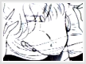

Entity » The Warrior
» False Assumption
At one time, there were definite controversies among the sailor senshi as to whether Sailor Venus is actually the princess of the moon. In the manga, Sailor Venus had a crescent moon on her forehead for some time. The senshi took this and other evidence into account. Was she really Princess Serenity, the princess of the moon?
The answer: obviously, no. In the manga, the sailor senshi did all think that she was the princess of the moon for a period of time. They noted the crescent moon on her forehead, and referred to her as "princess" until Usagi was revealed to be the actual princess. In the anime, although there was no crescent moon, they still thought that she was the princess, although there was less details shown.
 Regardless of who is the real princess, Sailor Venus's crescent moon was entirely authentic. While Minako was Sailor V, Princess Serenity was not awakened yet. Sailor V had the symbol on her forehead to deceive the Dark Kindom into thinking that she was the actual princess. Once Princess Serenity awakened, the crescent moon was replaced by a tiara, and Sailor V became Sailor Venus.
 But Sailor Venus pretended to be the princess for a purpose. As you may recall, it is the sailor senshi's duty to protect the princess. Sailor Venus willingly sacrificed her own safety for the princess. The impersonation attempt was to lure the Dark Kindom to pursue her instead of the real princess, thus ensuring her safety. Secrets travel fast, so the less people that know about this masquerade, the better. This is the primary reason that Sailor Venus hid her identity from the other sailor senshi as well. If you can fool your friends, you can fool your enemies. This statement summarizes Sailor Venus's situation in a nut shell. As aforementioned, Sailor Venus will do whatever it takes to guard the princess, this disguise was just one example.
But Sailor Venus pretended to be the princess for a purpose. As you may recall, it is the sailor senshi's duty to protect the princess. Sailor Venus willingly sacrificed her own safety for the princess. The impersonation attempt was to lure the Dark Kindom to pursue her instead of the real princess, thus ensuring her safety. Secrets travel fast, so the less people that know about this masquerade, the better. This is the primary reason that Sailor Venus hid her identity from the other sailor senshi as well. If you can fool your friends, you can fool your enemies. This statement summarizes Sailor Venus's situation in a nut shell. As aforementioned, Sailor Venus will do whatever it takes to guard the princess, this disguise was just one example.